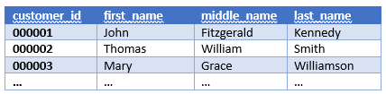
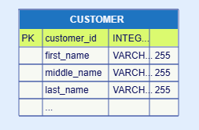

JDElite Data Modeler parses SQL schema files to graphical ERDs, creates new schema graphical models on the screen, and generates SQL data to schema files.
The Database ERDs (entity-relationship diagrams) represent the databases physical structure. An ER diagram contains two object types: entities and relationships. The entities correspond to database tables and in the ERDs they are modeled as diagram nodes. The nodes show the detailed table designs. The relationships between the entities are modeled as links between the nodes.
JDElite Data Modeler supports the relational databases SQL Server, Oracle, MySQL, MariaDB, PostgreSQL, DB2, and SQLite.
The ERD internal model, created in JDElite Data Modeler, is in JSON format. The ER diagram can be exported to a SQL script of the specific database schema. Vice versa, a database SQL schema script can be imported to JDElite Data Modeler, parsed to a JSON diagram model, visualized and modified as needed.
Database tables contain records (table rows) and columns. A table record is an instance of the represented entity. For example, the records in the CUSTOMER table below are instances of the customer entity and each record corresponds to a particular customer.

Database table columns, respectively the fields in a column, have specific properties: name, data type, data length, etc, specified in the SQL schema. In the above example, the record fields in the CUSTOMER table are customer_id, first_name, middle_name and last_name. These are the database table column names.
Each ERD node in JDElite Data Modeler represents the structure of a database table in its own table format. The rows in the diagram node table correspond to the database table columns, and the columns in the diagram node table correspond to the database column properties, in this case key, name, data type, length:
